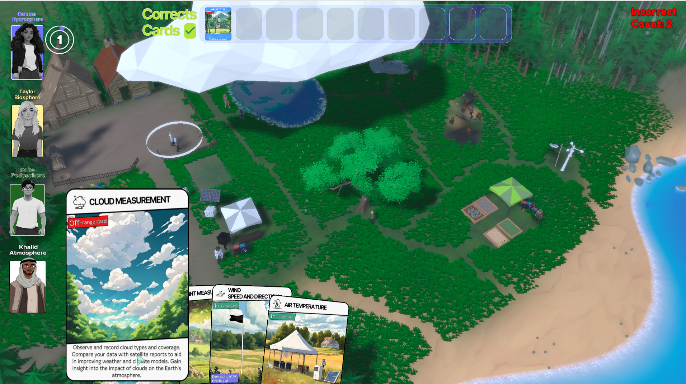
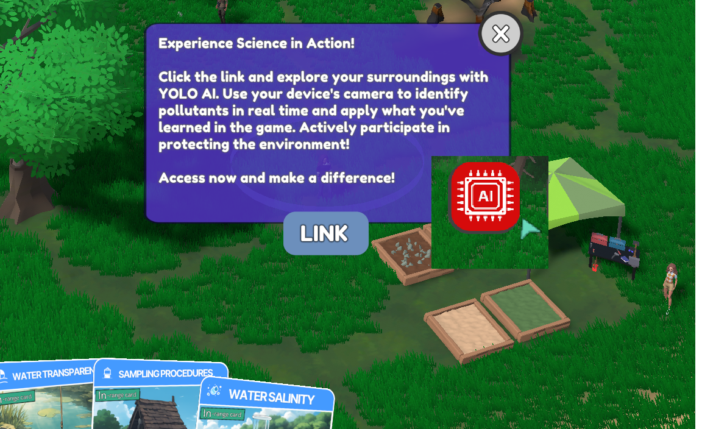
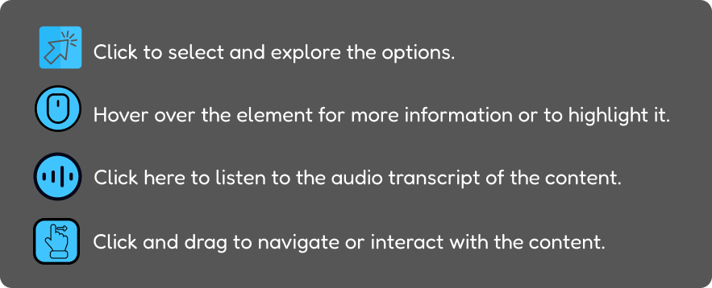
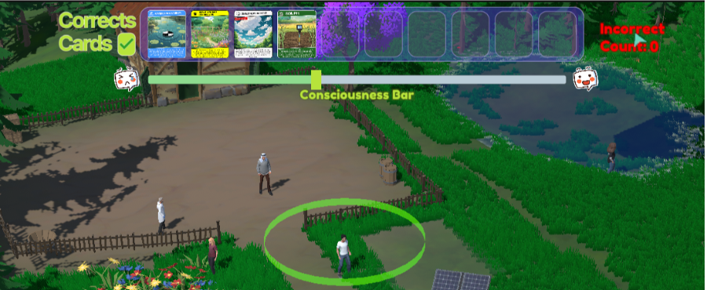
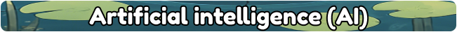
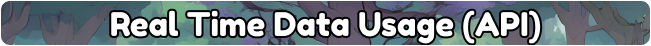
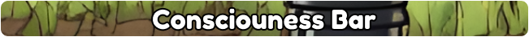

Dive into the stories and insights of the GLOBE program to see how it affects the environment. With interactive storytelling straight from our prototype, you can check out the protocols featured on the cards in the game. This hands-on experience lets you explore real-world environmental science and discover how it helps protect our planet!
The GLOBE program is vital for monitoring environmental changes through real-world scientific observations. In this 3D exploration game, you’ll apply GLOBE protocols to complete NASA missions. Switch between specialized characters, explore the site, and interact with objects to apply the correct protocols. Complete 10 successful tasks to win!
The game also allows you to observe real-time environmental data from the GLOBE API, offering a dynamic way to understand current environmental conditions. Learn how to monitor water, soil, and ecosystems while gaining knowledge that supports environmental protection.
Embark on a thrilling journey to an untouched island in Bahia, Brazil, where you and your team of young scientists must restore environmental balance. Using the GLOBE Program’s protocols, explore ecosystems, uncover hidden threats, and collect real data. Every action brings you closer to protecting the island and the planet. This isn't just a story—it’s a call to action. You’ll be part of a global network of citizen scientists, working to safeguard both this island and the planet.
Join the mission, become a global explorer, and make a real impact! Join the mission, become a global explorer, and make a real impact!
Join the mission, become a global explorer, and make a real impact! Join the mission, become a global explorer, and make a real impact!

Our solution combines artificial intelligence (AI) with GLOBE protocols to create an interactive educational game that promotes environmental awareness. As divers in Barra, we observed pollution and coral bleaching, which inspired us to integrate AI with environmental protocols to engage players.
Using the YOLO model, our AI detects and recognizes marine debris in real time, enabling automated environmental data collection. The game incorporates GLOBE protocols such as water quality analysis (transparency and precipitation), vegetation monitoring (tree growth and migration), as well as soil studies (pH, erosion and particles) and clouds (types and coverage).
We prioritized accessibility with audio text transcription and visual cues, ensuring that everyone can fully interact and contribute to environmental monitoring. This creates an inclusive and impactful experience, where AI and scientific data work together to promote awareness and action for the environment.
The game incorporates an engagement mechanic that links player actions to their 'level of good citizenship'. By correctly following protocols and completing missions, the player's environmental citizenship level increases, reflecting a commitment to environmental protection. On the other hand, failures in tasks result in a decrease in this level, highlighting the consequences of poor environmental management. This dynamic promotes a cycle of learning and responsibility, where every decision impacts progress in the game and encourages awareness of the importance of environmental choices.
One of the main features of the game is the ability to monitor real-time environmental data, integrated through the GLOBE Protocol API. These data are simulated within the game’s virtual environment and communicated via the Sentinel SAR satellite. For instance, on 2024/10/05, players can explore the game and visualize updated environmental data for a specific location, such as Rio de Janeiro, reflecting the information available on the GLOBE Visualization Data platform. In the image below, you can see these data displayed within the game.
Accessibility: Audio Transcription to Text
To ensure that all content is accessible to individuals with visual impairments, we provide an audio transcription feature. This resource allows users who cannot hear the audio to fully engage with the content in an inclusive manner.
How It Works
Click here to listen to the audio transcript of the content.
By clicking this button, you will be directed to an interface that presents the complete transcription of the audio. The transcription is organized clearly and sequentially, making it easy to read and understand. We use a format that is compatible with screen readers, ensuring smooth and intuitive navigation.